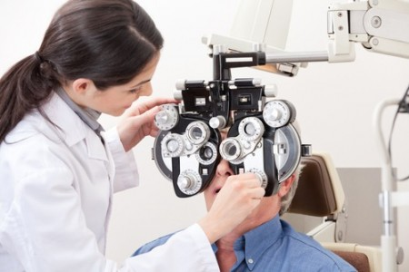

SOBRE NÓS
"O AME é um centro ambulatorial de diagnóstico e orientação terapêutica de alta resolutividade, com oferta de especialidades médicas, multidisciplinares e de exames, de acordo com necessidades da rede básica. Proporciona atendimento de forma regionalizada, referenciada e programada, realizando consultas ambulatoriais, exames e diagnósticos, procedimentos terapêuticos e pequenas cirurgias ambulatoriais.
O objetivo principal é agilizar o diagnóstico e o tratamento do paciente que necessita de serviços mais especializados dos que os oferecidos na rede básica, mas não tão graves para internação hospitalar ou atendimento emergencial.
Em uma estrutura de 2.000m2, com 45 consultórios, a unidade disponibiliza 14 especialidades médicas, sendo referência ambulatorial na região.
Além dos atendimentos médicos, também são realizados atendimentos de fisioterapia, fonoaudiologia, nutrição, psicologia e serviço social, pequenas cirurgias ambulatoriais e exames diagnósticos."
MISSÃO
Prestar atendimento de saúde especializado à comunidade, com equipe multidisciplinar, aliando ciência e tecnologia com o compromisso em satisfazer o cliente.
VISÃO
Ser reconhecido como um AME de excelência.
VALORES
Ética, Valorização do ser humano, Responsabilidade social, Segurança, Espiritualidade Comprometimento com a qualidade, Competência Essencial, Acolhimento e Respeito
ESPECIALIDADES
Cardiologia
Oftalmologia
Mastologia
Ginicologia
Dermatologia
Neurologia
Obstetricia
Otorrinolaringologista
Pneumologia/Tisiologia
Notícias e Eventos
Campanha Contra a Dengue
Campanha Carnaval
Campanha Divino Lar